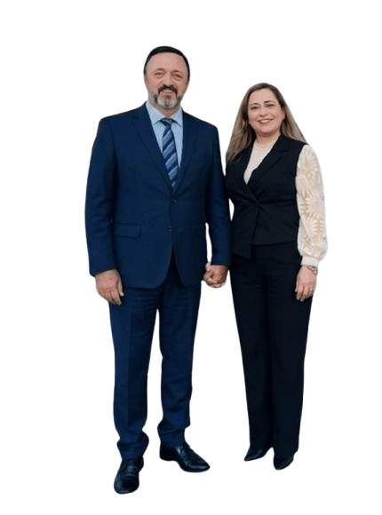

Culto de quarta-feira20h00
Igreja Evangélica Assembleia de Deus em Coimbra
Chamados por Deus.
Enviados para servir.
Somos a Igreja Assembleia de Deus Missões Silóé em Coimbra — uma comunidade de fé unida pela Palavra de Deus, pela oração e pelo compromisso de levar o amor de Jesus a cada vida.
✦
Um lugar de fé, esperança e comunhão em Coimbra.
FÉ•MISSÃO•COMUNHÃO
Culto de domingo10h30
Estamos emCoimbra, Portugal
A nossa história
Uma missão que atravessa fronteiras.
A história da Missões Silóé nasceu de um chamamento de Deus, alicerçado na fé, na obediência e na confiança de que o Senhor orientaria cada passo.
A 6 de março de 2005, o Pastor Marcelo Guilherme e a Pastora Cláudia Guilherme partiram do Brasil com os seus filhos, Marcelo Júnior e Gabriel. Chegaram a Portugal no dia seguinte, com o propósito de cumprir a missão que acreditavam ter recebido de Deus.
Os primeiros cultos tiveram lugar em casa da família. Mais tarde, passaram a realizar-se num hotel e, cerca de um ano depois, a igreja conseguiu arrendar uma sala. Assim cresceu e se consolidou a obra da Assembleia de Deus Missões Silóé em Cascais, sustentada pela oração, perseverança e fé.
O caminho missionário
Uma história de fé e expansão.
O início em Portugal
A família pastoral chega do Brasil e inicia os primeiros cultos, dando origem à obra em Cascais.
A obra chega a Coimbra
Em agosto, o ministério assume o trabalho em Coimbra, começando com um grupo de cerca de 23 pessoas, incluindo crianças, e dando continuidade à missão de anunciar a Palavra e cuidar de pessoas.
Expansão missionária em Angola
Em agosto, a Missões Silóé dá mais um passo na sua missão, levando o Evangelho, a oração, o apoio espiritual e iniciativas de evangelização e assistência às comunidades alcançadas.
A nossa missão
O Evangelho para além das paredes.
Anunciar Jesus Cristo, proclamar a Palavra de Deus, fortalecer famílias, prestar apoio espiritual e levar esperança a todos os lugares onde se abram portas para servir.
Queremos evangelizar, orar, ensinar, cuidar e servir, partilhando a mensagem da salvação e o amor de Deus com cada pessoa.
Liderança
Servir com fé, liderar com propósito.
Conheça os pastores que acompanham esta missão em Portugal e Angola.
Coimbra · Portugal
Pastor Waldemar de Paula
Pastora Andreia de Paula
Responsáveis pela congregação de Coimbra, ao serviço da comunidade e da missão de anunciar o Evangelho.

Cascais · Portugal
Pastor Marcelo Guilherme
Pastora Cláudia Guilherme
Fundadores da obra em Portugal, cuja caminhada missionária teve início em 2005.
Angola · Missões
Pastor Inocêncio Jundo
Pastora Angelina Jundo
Pastor dirigente da obra em Angola, integrada no compromisso missionário da Missões Silóé.
Participe connosco
Há lugar para si na nossa comunidade.
Será um prazer receber-vos nos nossos cultos em Coimbra. Venha como está e partilhe connosco um tempo de louvor, Palavra e comunhão.
Fale connosco no WhatsApp ↗
Horários dos Cultos
Culto de quarta-feira
Quarta-feira
Culto de domingo
Domingo
Os horários podem sofrer alterações pontuais. Para confirmação, contacte-nos.
Venha visitar-nos
Esperamos por si em Coimbra.
Se procura uma igreja em Coimbra onde possa crescer na fé, conhecer pessoas e caminhar em comunhão, entre em contacto ou visite-nos num dos nossos cultos.
MoradaAv. Fernão de Magalhães, 475
3000-177 Coimbra, Portugal
Ver no mapa →
Telefone / WhatsApp+351 965 357 185 Enviar mensagem →
Instagram@igrejamissoes_siloecoimbra Ver perfil →